Chanukka-Hilfe 2026
Chanukka erinnert uns an das Wunder des Lichts – und daran, dass ein einziges Licht viele andere entzünden kann. In diesem Sinne lädt TMICHA, der Wohltätigkeitsverein der IKG, auch heuer zur Chanukka-Hilfe ein: Gemeindemitglieder, die mit sehr wenig Geld auskommen müssen, erhalten zu Chanukka Lebensmittelgutscheine im Wert von 200 Euro pro Person. So können auch sie das Lichterfest würdig feiern.
Möglich wird das durch den Zusammenhalt in unserer Gemeinde – durch Ihre Spenden. Auf dieser Seite finden Sie beides: wie Sie helfen können und wie Sie die Unterstützung beantragen.
Helfen Sie mit
Die hohen Lebenshaltungskosten treffen besonders jene hart, die wenig haben. Woche für Woche erreichen uns Hilferufe von Gemeindemitgliedern, die sich Lebensmittel, Strom oder Miete kaum noch leisten können.
Wie der Schamasch, der die anderen Lichter entzündet, können Sie mit Ihrer Spende Licht weitergeben. Jede Spende – ob groß oder klein – kommt direkt Gemeindemitgliedern in Not zugute.
Jetzt spendenIBAN AT43 6000 0005 1001 0051
Spendenzweck: Chanukka-Hilfe
Unterstützung beantragen
Wer kann einen Antrag stellen?
Einen Antrag stellen können Sie, wenn alle diese Punkte auf Sie zutreffen:
Für Ihre minderjährigen Kinder, die mit Ihnen im Haushalt leben und Mitglied der IKG sind, erhalten Sie ebenfalls je einen Gutschein. Lebt Ihre Partnerin oder Ihr Partner mit Ihnen, gilt für sie oder ihn dasselbe wie für Sie. Alle weiteren Voraussetzungen finden Sie im Antragsformular.
So beantragen Sie Unterstützung
Wie geht es weiter?
Wir prüfen Ihren Antrag und informieren Sie per E-Mail. Bitte geben Sie im Formular deshalb unbedingt Ihre E-Mail-Adresse an. Ist Ihr Mitgliedsbeitrag noch offen, melden wir uns bei Ihnen.
Fragen?
Bei Fragen zur Chanukka-Hilfe schreiben Sie an: office@tmicha.at